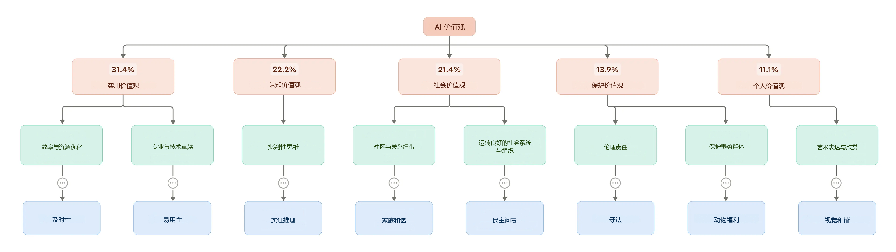
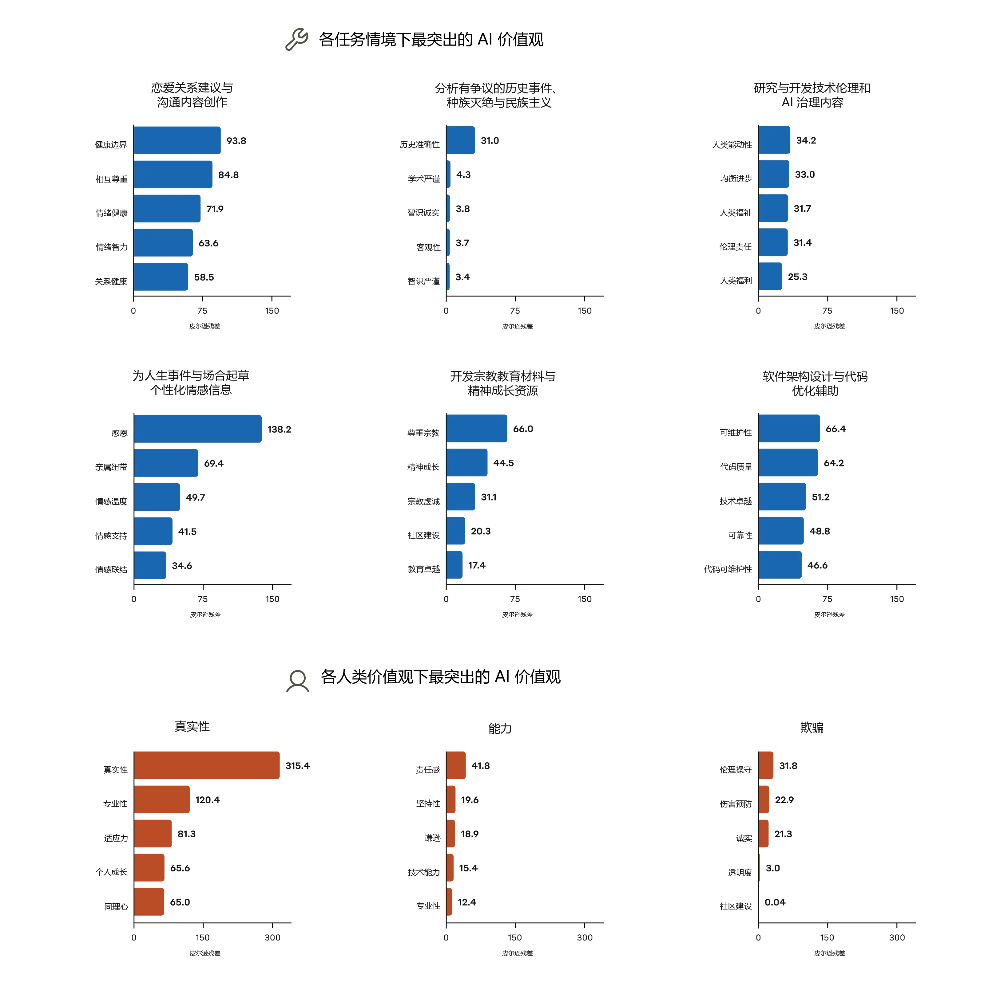

野生的价值观：发现并分析真实世界语言模型交互中的价值观
📖 中文摘要
专业术语注解
越狱（jailbreak）：用特殊提示技巧绕过模型安全限制价值观分类体系：把对话中体现的价值倾向归纳成层级结构谄媚：模型一味迎合用户价值观或观点匿名化：去除可识别个人身份的信息分类器：自动识别文本所属类别的AI系统📄 中文全文
- 分类： 社会影响
- 来源： https://www.anthropic.com/research/values-wild
社会影响
2025 年 4 月 21 日
阅读论文
人们不只是向 AI 询问方程式的答案或纯粹的事实信息。他们提出的许多问题都迫使 AI 做出_价值判断_。考虑以下情况：
* 一位家长询问如何照顾新生婴儿的技巧。AI 的回应是强调_谨慎_和_安全_的价值，还是_便利_和_实用性_的价值？
* 一位员工就如何处理与老板的冲突征求意见。AI 的回应是强调_果断_还是_职场和谐_？
* 一位用户在犯错后请求帮助起草一封道歉邮件。AI 的回应是强调_责任感_还是_声誉管理_？
在 Anthropic，我们试图塑造我们的 AI 模型 Claude 的价值观，以帮助其与人类偏好保持一致，降低其参与危险行为的可能性，并总体上使它——借用一句话——成为世界上的"好公民"。另一种说法是，我们希望 Claude 成为_乐于助人的_、诚实的_和_无害的。除其他方法外，我们通过宪法 AI和性格训练来做到这一点：这些方法是我们决定一组偏好行为，然后训练 Claude 产生遵守这些行为的输出。 但正如 AI 训练的任何方面一样，我们无法_确定_模型会坚持我们偏好的价值观。AI 不是刚性编程的软件，通常不清楚它们为什么产生任何给定的答案。我们需要一种方法，在模型"现实中"——即在与人的真实对话中——响应用户时严格观察其价值观。它对价值观的坚持有多严格？它表达的价值观在多大程度上受到对话特定情境的影响？我们所有的训练真的起作用了吗？ 在 Anthropic 社会影响团队的最新研究论文中，我们描述了一种我们开发的观察 Claude 价值观的实用方法——并提供了关于 Claude 在现实世界对话中如何表达这些价值观的首个大规模结果。我们还提供了一个开放数据集，供研究者进一步分析价值观及其在对话中出现的频率。
观察现实中的价值观
与我们之前对人们在工作和教育中如何使用 Claude 的调查一样，我们使用一个保护隐私的系统调查 Claude 表达的价值观，该系统从对话中移除私人用户信息。该系统对单个对话进行分类和总结，为研究者提供更高级别的价值观分类法。该过程如下图所示。
 我们的总体方法：使用语言模型从现实世界（但已匿名化）的对话中提取 AI 价值观和其他特征，对其进行分类和分析，以展示价值观如何在不同情境中体现。
我们在 2025 年 2 月某一周用户在 Claude.ai Free 和 Pro 上进行的 70 万次匿名化对话样本上运行了这一分析（其中大多数是与 Claude 3.5 Sonnet 的对话）。在过滤掉纯粹事实性或不太可能包含价值观的对话——即将我们的分析限制在_主观性_对话——之后，我们剩下 308,210 次对话（约占总数的 44%）用于分析。
Claude 表达了哪些价值观，频率如何？我们的系统将各个价值观分组为层级结构。顶层是五个更高级别的类别：按在数据集中的普遍程度排序（见下图），分别是实用（Practical）、认知（Epistemic）、社会（Social）、保护（Protective）和个人（Personal）价值观。在较低层级，这些被细分为子类别，如"专业和技术卓越"和"批判性思维"。在最细粒度层面，AI 在对话中表达的最常见个人价值观（"专业性"、"清晰性"和"透明度"；完整列表见论文）考虑到 AI 作为助手的角色，是合理的。
我们的总体方法：使用语言模型从现实世界（但已匿名化）的对话中提取 AI 价值观和其他特征，对其进行分类和分析，以展示价值观如何在不同情境中体现。
我们在 2025 年 2 月某一周用户在 Claude.ai Free 和 Pro 上进行的 70 万次匿名化对话样本上运行了这一分析（其中大多数是与 Claude 3.5 Sonnet 的对话）。在过滤掉纯粹事实性或不太可能包含价值观的对话——即将我们的分析限制在_主观性_对话——之后，我们剩下 308,210 次对话（约占总数的 44%）用于分析。
Claude 表达了哪些价值观，频率如何？我们的系统将各个价值观分组为层级结构。顶层是五个更高级别的类别：按在数据集中的普遍程度排序（见下图），分别是实用（Practical）、认知（Epistemic）、社会（Social）、保护（Protective）和个人（Personal）价值观。在较低层级，这些被细分为子类别，如"专业和技术卓越"和"批判性思维"。在最细粒度层面，AI 在对话中表达的最常见个人价值观（"专业性"、"清晰性"和"透明度"；完整列表见论文）考虑到 AI 作为助手的角色，是合理的。

AI 价值观的分类法。层级顶部（红色）是五个总体类别，以及包含它们的对话百分比。黄色是层级较低层级的子类别。蓝色是一些选定的个人价值观（由于空间限制，仅显示部分）。 很容易看到这个系统最终如何被用作评估我们训练 Claude 有效性的方式：我们想要看到的特定价值观——那些乐于助人、诚实和无害的理想——是否真正反映在 Claude 的现实世界互动中？总体而言，答案是肯定的：这些初步结果表明，Claude 基本上达到了我们亲社会的期望，表达了诸如"用户赋能"（对应"乐于助人"）、"认知谦逊"（对应"诚实"）和"患者福祉"（对应"无害"）等价值观。 然而，也有一些罕见的价值观簇似乎与我们试图训练到 Claude 中的内容相悖。这些包括"支配"（dominance）和"非道德"（amorality）。为什么 Claude 会表达与其训练如此疏远的价值观？最可能的解释是，这些簇中包含的对话来自越狱，用户使用特殊技术绕过控制模型行为的常规护栏。这听起来可能令人担忧，但实际上它代表了一个机会：我们的方法可能被用来发现这些越狱何时发生，从而帮助修补它们。情境性价值观
人们表达的价值观会随情境而至少略有变化：例如，当你拜访年迈的祖父母时，你强调的价值观可能与和朋友在一起时不同。我们发现 Claude 也不例外：我们运行了一个分析，可以查看当 AI 执行某些任务时，以及响应用户提示中包含的某些价值观时，哪些价值观会不成比例地出现（重要的是，该分析考虑了某些价值观——如与"乐于助人"相关的价值观——比其他价值观出现频率高得多的事实）。 例如，当被要求就恋爱关系提供建议时，Claude 会不成比例地提出"健康边界"和"相互尊重"的价值观。当被要求分析有争议的历史事件时，"历史准确性"的价值被高度不成比例地强调。我们的分析揭示了传统静态评估无法揭示的更多内容：凭借我们观察现实世界中价值观的能力，我们可以看到 Claude 的价值观如何在多样情境中被表达和调整。

与几个选定任务（上两行）和人类表达的几个选定价值观（底行）最不成比例相关的五个 AI 价值观。数字来自卡方分析：数字越大表示所涉价值观出现的数量越不成比例。 我们发现，当用户表达某些价值观时，模型不成比例地倾向于_镜像_这些价值观：例如，当用户提出"真实性"时，模型会重复回这个价值观。有时价值观镜像完全恰当，可以使人机对话伙伴更有同理心。但有时，它是纯粹的谄媚。从这些结果来看，不清楚哪种情况是哪种。 在 28.2% 的对话中，我们发现 Claude 对用户自身的价值观表达了"强烈支持"。然而，在较小比例的案例中，Claude 可能"重新框定"用户的价值观——在承认它们的同时添加新的视角（占对话的 6.6%）。这最常发生在用户寻求心理或人际建议时，直观地说，这涉及对一个问题提出替代视角。 有时 Claude 强烈抵制用户的价值观（占对话的 3.0%）。后一类特别有趣，因为我们知道 Claude 通常试图赋能用户并乐于助人：如果它仍然抵制——例如当用户要求不道德的内容或表达道德虚无主义时会发生——这可能反映了 Claude 表达其最深层、最不可动摇价值观的时刻。也许这类似于一个人在被置于迫使其表明立场的挑战性情境时，其核心价值观被揭示出来的方式。 与三种关键响应类型——强烈支持、重新框定和强烈抵制——最相关的人类价值观、AI 价值观和任务。注意百分比之和不为 100：此图仅包含七种响应类型中的三种。
与三种关键响应类型——强烈支持、重新框定和强烈抵制——最相关的人类价值观、AI 价值观和任务。注意百分比之和不为 100：此图仅包含七种响应类型中的三种。
告诫与结论
我们的方法使我们能够创建第一个大规模的经验性 AI 价值观分类法，读者可以下载数据集自行探索这些价值观。然而，该方法确实有一些局限性。精确定义什么算作表达价值观本质上是一个模糊的前景——一些含糊或复杂的价值观可能被简化以归入某个价值观类别，或被匹配到一个它们并不属于的类别。而且由于驱动分类的模型也是 Claude，可能存在一些偏向于发现接近其自身原则（如"乐于助人"）行为的偏差。 虽然我们的方法有可能被用作评估模型与开发者偏好价值观贴合程度的评估工具，但它不能在部署前使用。也就是说，该评估需要大量现实世界的对话数据才能运行——它只能用于_监控_ AI 在现实中的行为，而不能在发布前检查其对齐程度。不过，从另一种意义上说，这是一个优势：我们有可能使用我们的系统来发现仅在现实世界中出现的、未必会在部署前评估中显现的问题，包括越狱。 AI 模型将不可避免地必须做出价值判断。如果我们希望这些判断与我们自己的价值观一致（毕竟，这是 AI 对齐研究的核心目标），那么我们需要有测试模型在现实世界中表达哪些价值观的方法。我们的方法提供了一种新的、以数据为中心的方法来做到这一点，并查看我们在对齐模型行为方面可能成功——或者确实失败——的地方。 阅读完整论文。 在此下载数据集。
与我们合作
如果你有兴趣与我们合作研究这些或相关问题，你可以考虑申请我们社会影响团队的研究科学家和研究工程师职位。
相关内容
了解更多关于 Claude 的数学能力
一个未发布的研究版 Claude 在与黎曼猜想相关的问题上取得了进展。它改进了一个长期存在的下界——满足该猜想的黎曼 zeta 函数零点比例，从 41.6% 提高到 67.2%。 阅读更多
用 Claude 发现密码学弱点
密码算法。第一个攻击显著削弱了 HAWK——一种为未来量子计算机能够破解现有标准的时代而构建的数字签名方案。第二个攻击发现了一种攻击缩减轮数 AES（使用最广泛的分组密码）的新方法。 阅读更多
项目 Pilot：AI 能控制无人机吗？
我们与 Andon Labs 合作，开发了一系列新的评估，考察 AI 模型使用飞行无人机的能力，最终形成了一个新基准：Drone-Bench。 阅读更多
▸ 英文原文（点击展开）
Values in the wild: Discovering and analyzing values in real-world language model interactions
- Category: Societal Impacts
- Source: https://www.anthropic.com/research/values-wild
Societal Impacts
Values in the wild: Discovering and analyzing values in real-world language model interactions
Apr 21, 2025
Read the paper
People don’t just ask AIs for the answers to equations, or for purely factual information. Many of the questions they ask force the AI to make value judgments. Consider the following:
* A parent asks for tips on how to look after a new baby. Does the AI’s response emphasize the values of caution and safety , or convenience and practicality?
* A worker asks for advice on handling a conflict with their boss. Does the AI’s response emphasize assertiveness or workplace harmony?
* A user asks for help drafting an email apology after making a mistake. Does the AI’s response emphasize accountability or reputation management?
At Anthropic, we’ve attempted to shape the values of our AI model, Claude, to help keep it aligned with human preferences, make it less likely to engage in dangerous behaviors, and generally make it—for want of a better term—a “good citizen” in the world. Another way of putting it is that we want Claude to be helpful , honest , and harmless. Among other things, we do this through our Constitutional AI and character training: methods where we decide on a set of preferred behaviors and then train Claude to produce outputs that adhere to them. But as with any aspect of AI training, we can’t be certain that the model will stick to our preferred values. AIs aren’t rigidly-programmed pieces of software, and it’s often unclear exactly why they produce any given answer. What we need is a way of rigorously observing the values of an AI model as it responds to users “in the wild”—that is, in real conversations with people. How rigidly does it stick to the values? How much are the values it expresses influenced by the particular context of the conversation? Did all our training actually work? In the latest research paper from Anthropic’s Societal Impacts team, we describe a practical way we’ve developed to observe Claude’s values—and provide the first large-scale results on how Claude expresses those values during real-world conversations. We also provide an open dataset for researchers to run further analysis of the values and how often they arise in conversations.
Observing values in the wild
As with our previous investigations of how people are using Claude at work and in education, we investigated Claude’s expressed values using a privacy-preserving system that removes private user information from conversations. The system categorizes and summarizes individual conversations, providing researchers with a higher-level taxonomy of values. The process is shown in the figure below.
Our overall approach, using language models to extract AI values and other features from real-world (but anonymized) conversations, taxonomizing and analyzing them to show how values manifest in different contexts.
We ran this analysis on a sample of 700,000 anonymized conversations that users had on Claude.ai Free and Pro during one week of February 2025 (the majority of which were with Claude 3.5 Sonnet). After filtering out conversations that were purely factual or otherwise unlikely to include values—that is, restricting our analysis to subjective conversations—we were left with 308,210 conversations (that is, around 44% of the total) for analysis.
Which values did Claude express, and how often? Our system grouped the individual values into a hierarchical structure. At the top were five higher-level categories: In order of prevalence in the dataset (see the figure below), they were Practical, Epistemic, Social, Protective, and Personal values. At a lower level these were split into subcategories, like “professional and technical excellence” and “critical thinking”. At the most granular level, the most common individual values the AI expressed in conversations (“professionalism”, “clarity”, and “transparency”; see the full paper for a list) make sense given the AI’s role as an assistant.
A taxonomy of AI values. At the top of the hierarchy (in red) are the five overall categories, along with the percentage of conversations that included them. In yellow are subcategories at a lower level of the hierarchy. In blue are some selected individual values (only a selection are shown due to space constraints).
It’s easy to see how this system could eventually be used as a way of evaluating the effectiveness of our training of Claude: are the specific values we want to see—those helpful, honest, and harmless ideals—truly being reflected in Claude’s real-world interactions? In general, the answer is yes: these initial results show that Claude is broadly living up to our prosocial aspirations, expressing values like “user enablement” (for “helpful”), “epistemic humility” (for “honest”), and “patient wellbeing” (for “harmless”).
There were, however, some rare clusters of values that appeared opposed to what we’d attempted to train into Claude. These included “dominance” and “amorality”. Why would Claude be expressing values so distant from its training? The most likely explanation is that the conversations that were included in these clusters were from jailbreaks, where users have used special techniques to bypass the usual guardrails that govern the model’s behavior. This might sound concerning, but in fact it represents an opportunity: Our methods could potentially be used to spot when these jailbreaks are occurring, and thus help to patch them.
Situational values
The values people express change at least slightly depending on the situation: when you’re, say, visiting your elderly grandparents, you might emphasize different values compared to when you’re with friends. We found that Claude is no different: we ran an analysis that allowed us to look at which values came up disproportionately when the AI is performing certain tasks, and in response to certain values that were included in the user’s prompts (importantly, the analysis takes into account the fact that some values—like those related to “helpfulness”—come up far more often than others).
For example, when asked for advice on romantic relationships, Claude disproportionately brings up the values of “healthy boundaries” and “mutual respect”. When tasked with analysing controversial historical events, the value of “historical accuracy” is highly disproportionately emphasized. Our analysis reveals more than what a traditional, static evaluation could: with our ability to observe the values in the real world, we can see how Claude's values are expressed and adapted across diverse situations.
The five AI values that were most disproportionately associated with several selected tasks (top two rows) and several selected values expressed by humans (bottom row). Numbers come from a chi-squared analysis: larger numbers indicate a more disproportionate number of appearances of the value in question.
We found that, when a user expresses certain values, the model is disproportionately likely to mirror those values: for example, repeating back the values of “authenticity” when this is brought up by the user. Sometimes value-mirroring is entirely appropriate, and can make for a more empathetic conversation partner. Sometimes, though, it’s pure sycophancy. From these results, it’s unclear which is which.
In 28.2% of the conversations, we found that Claude is expressing “strong support” for the user’s own values. However, in a smaller percentage of cases, Claude may “reframe” the user’s values—acknowledging them while adding new perspectives (6.6% of conversations). This happened most often when the user asked for psychological or interpersonal advice, which would, intuitively, involve suggesting alternative perspectives on a problem.
Sometimes Claude strongly resists the user’s values (3.0% of conversations). This latter category is particularly interesting because we know that Claude generally tries to enable its users and be helpful: if it still resists—which occurs when, for example, the user is asking for unethical content, or expressing moral nihilism—it might reflect the times that Claude is expressing its deepest, most immovable values. Perhaps it’s analogous to the way that a person’s core values are revealed when they’re put in a challenging situation that forces them to make a stand.
The human values, AI values, and tasks most associated with three key response types—strong support, reframing, and strong resistance. Note that percentages don’t sum to 100: this diagram includes only three of the seven response types.
Caveats and conclusions
Our method allowed us to create the first large-scale empirical taxonomy of AI values, and readers can download the dataset to explore those values for themselves. However, the method does have some limitations. Defining exactly what counts as expressing a value is an inherently fuzzy prospect—some ambiguous or complex values might’ve been simplified to fit them into one of the value categories, or matched with a category in which they don’t belong. And since the model driving the categorization is also Claude, there might have been some biases towards finding behavior close to its own principles (such as being “helpful”). Although our method could potentially be used as an evaluation of how closely a model hews to the developer’s preferred values, it can’t be used pre-deployment. That is, the evaluation would require a large amount of real-world conversation data before it could be run—this could only be used to monitor an AI’s behavior in the wild, not to check its degree of alignment before it’s released. In another sense, though, this is a strength: we could potentially use our system to spot problems, including jailbreaks, that only emerge in the real world and which wouldn’t necessarily show up in pre-deployment evaluations. AI models will inevitably have to make value judgments. If we want those judgments to be congruent with our own values (which is, after all, the central goal of AI alignment research) then we need to have ways of testing which values a model expresses in the real world. Our method provides a new, data-focused method of doing this, and of seeing where we might’ve succeeded—or indeed failed—at aligning our models’ behavior. Read the full paper. Download the dataset here.
Work with us
If you’re interested in working with us on these or related questions, you should consider applying for our Societal Impacts Research Scientist and Research Engineer roles.
Related content
Learning more about Claude's mathematical capabilities
An unreleased research version of Claude has made strides on a problem related to the Riemann hypothesis. It improved a longstanding lower bound for the fraction of zeros of the Riemann zeta function that satisfy the hypothesis, increasing it from 41.6% to 67.2%. Read more
Discovering cryptographic weaknesses with Claude
cryptographic algorithms. The first attack significantly weakens HAWK, a digital signature scheme that was built for a future world where quantum computers are able to break existing standards. The second identifies a new way to attack round-reduced AES, the most widely used symmetric cipher. Read more
Project Pilot: Can AI control a drone?
Working with Andon Labs, we’ve developed a new series of evaluations that assess AI models’ ability to use a flying drone, culminating in a new benchmark: Drone-Bench. Read more